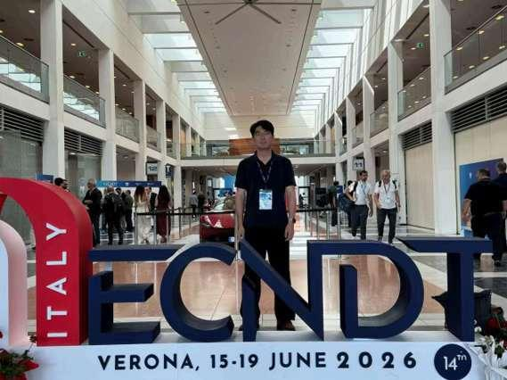
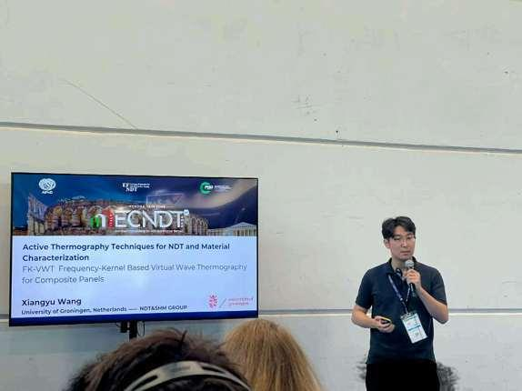
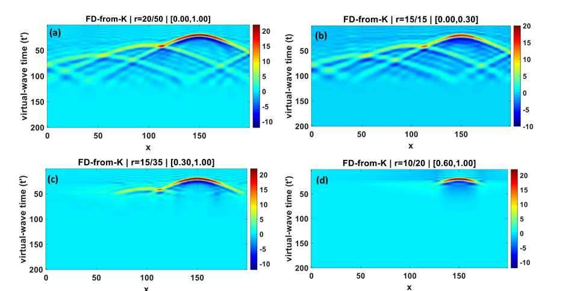

Our PhD student Xiangyu Wang presents FK-VWT research at ECNDT 2026
Our PhD student Xiangyu Wang attended the 14th European Conference on Non-Destructive Testing (ECNDT 2026), held at the Veronafiere Conference Centre in Verona, Italy, from June 15 to 19, 2026. In the session on active thermography, he delivered an oral presentation entitled FK-VWT: Frequency-Kernel Based Virtual Wave Thermography for Composite Panels, sharing our group's recent work on thermographic reconstruction and depth-resolved defect characterization in composite materials.
ECNDT is the flagship international conference of the European Federation for Non-Destructive Testing (EFNDT). Organized by the Italian Society for Non-Destructive Testing (AIPnD), the event brought together researchers, engineers, and industry specialists to exchange advances in non-destructive testing, structural integrity assessment, and quality control.
Frequency-selective thermographic reconstruction
Infrared thermography offers non-contact, full-field inspection of composite panels used in aerospace, energy, and transport. However, heat diffusion smooths the response from deeper defects, while higher-frequency information decays rapidly with depth. These effects create a trade-off between defect detectability and depth resolution.
The virtual wave concept transforms measured surface temperature data into a wave-like field for depth localization. The proposed FK-VWT method formulates this inverse problem in the frequency domain by applying selected rows of a unitary discrete Fourier transform matrix to both the temperature data and the virtual wave kernel. This enables frequency-band selection before inversion and separate regularization of individual bands, including truncated singular value decomposition (T-SVD).
- Full-band consistency: retaining all effective frequencies gives a formulation mathematically equivalent to the conventional time-domain approach.
- Low-frequency information: longer thermal diffusion lengths preserve deeper responses, although reconstructed features are smoother and axial resolution is lower.
- High-frequency information: higher frequencies sharpen shallow boundaries and peaks but attenuate more rapidly, weakening deeper features.
- Depth-aware band selection: choosing frequency bands for a target depth offers a route towards a more interpretable balance between noise suppression, defect detectability, and depth resolution.
The conference provided an opportunity to present the group's research on infrared thermography and virtual wave inversion and to exchange ideas with the international NDT community. By explicitly linking reconstruction to frequency-dependent depth sensitivity, FK-VWT provides a methodological basis for future depth-adaptive inspection of composite materials.



